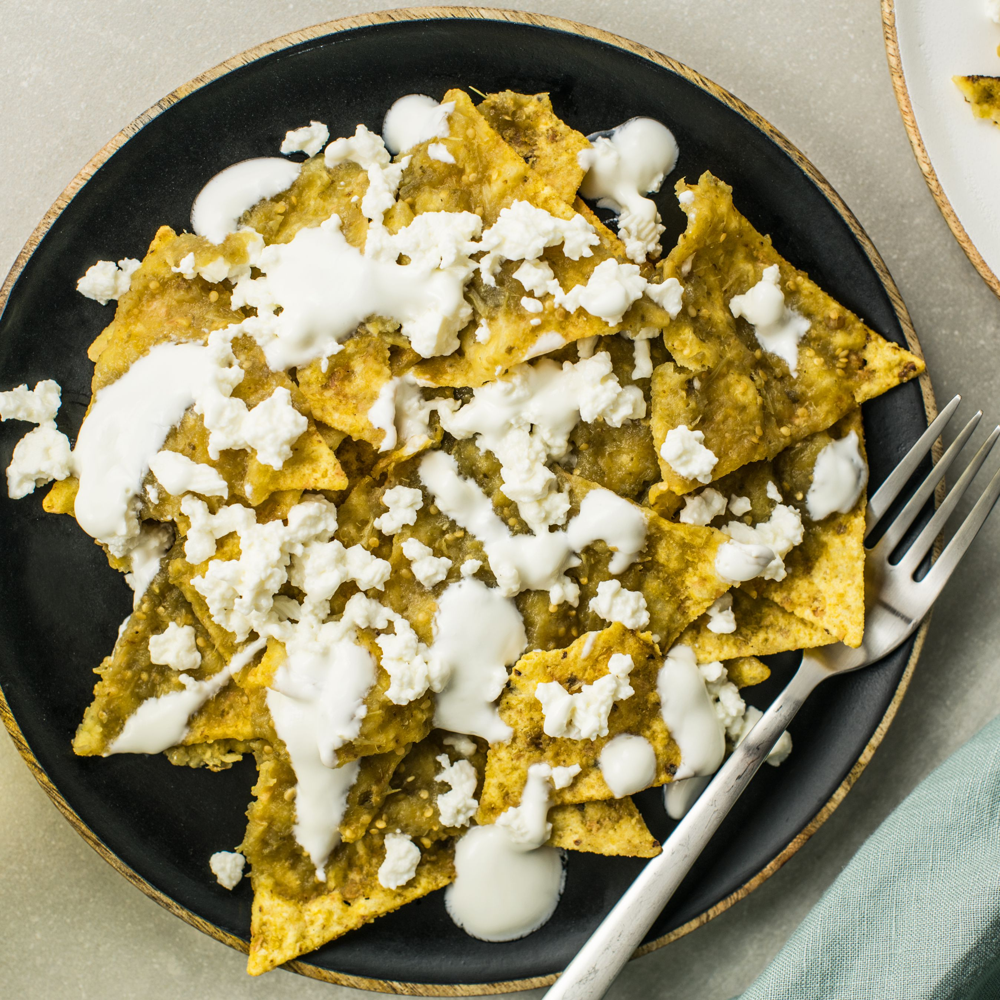

Chilaquiles

Description
This is a Mexican casserole that my wife made one night. The original recipe did not call for teaspoons or tablespoons, but with ounces and pounds. It can be made with or without chorizo. I prefer it with soy-based meatless chorizo substitute, which also makes it a good dish for vegetarians.
Ingredients
- ½ onion, chopped
- 1 egg per person
- ½ (6 ounce) can sliced black olives
- ¼ cup white vinegar, divided
- ½ tablespoon vegetable oil
- ¼ pound chorizo or bulk spicy pork sausage
- 6 (7 inch) corn tortillas, cut into 1-inch pieces
- 2 tablespoons vegetable oil
- ½ tablespoon and ¾ teaspoon all-purpose flour
- 1 ½ (8 ounce) cans tomato sauce
- ½ (7.75 ounce) can Mexican style hot tomato sauce (such as El Pato Salsa de Chile Fresco®)
- ½ cup water
- ¾ teaspoon unsweetened cocoa powder
- ½ teaspoon white sugar
- ½ tablespoon white vinegar
- ½ tablespoon dried oregano
- ½ tablespoon taco seasoning mix
- ½ (4 ounce) can diced green chiles, drained
- ⅓ cup and ½ tablespoon and ½ teaspoon crumbled cotija or feta cheese
Steps
- Put chopped onion and sliced olives in separate small bowls and combine each with 1/4 cup of vinegar. Set aside to marinate. Meanwhile, heat the vegetable oil in a skillet over medium heat. Stir in the chorizo, breaking it apart into crumbles as it cooks, about 10 minutes. Remove the chorizo from the skillet and set aside.
- Heat 1/4 cup of oil in the skillet and add the tortilla pieces, cooking and stirring over medium-low heat until just beginning to get crisp and golden at the edges, about 10 minutes. Remove skillet from heat and drain the tortillas; pour 1 tablespoon of the oil into a saucepan.
- Heat the saucepan over medium-low heat until hot but not smoking. Add the flour, and cook and stir until smooth, about 1 minute. Pour in the regular and hot tomato sauces, water, browned chorizo, cocoa powder, sugar, 1 tablespoon of vinegar, oregano, and taco seasoning. Simmer the sauce about 5 minutes to blend the flavors. Stir in diced chiles and tortillas. Simmer about 10 minutes more, stirring occasionally, until tortillas have softened and the mixture is thick.
- Drain the onion and olives. Spoon a layer of tortilla mixture evenly into a 2 quart baking dish or serving dish, and follow with a layer of about 2 tablespoons marinated onion, then a layer of 2 tablespoons olives, followed by a layer of 1/4 cup cheese. Repeat layers twice more. Serve hot.